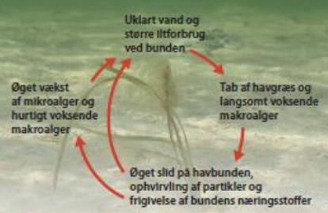
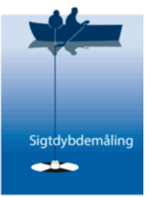
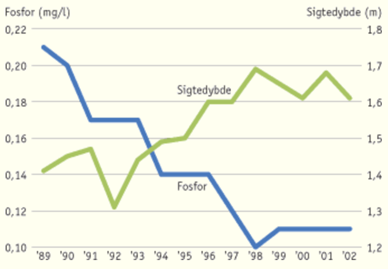
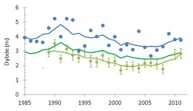
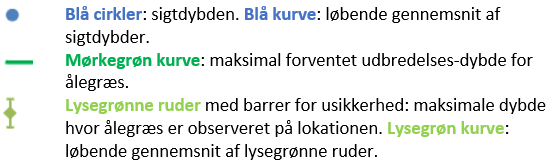

Biologi A
Opgave 1. Ålegræs
Ålegræs er en vandplante, som tilhører havgræsserne, og trives på bunden af danske kyster på de første 2-5 meters dybde, hvis vandet er klart. Udbredelsen af ålegræs kan påvirkes af flere forhold, hvoraf nogle fremgår af figur 1.

Figur 1. Forhold der kan påvirke udbredelsen af havgræs og langsomt voksende makro-alger (tang).
| 1. | Forklar hvordan et af forholdene, som er vist på figur 1, kan påvirke udbredelsen af ålegræs. Inddrag figur 1. |
Sigtdybde er et mål for vandets klarhed og måles som den dybde, hvor en skive nedsænket i vandet, netop ikke længere kan ses. Se figur 2.

Figur 2. Måling af sigtdybde.
Udbredelsen af ålegræs afhænger bl.a. af sigtdybden og undersøgelser har vist, at ålegræs generelt kan forventes højest at udbrede sig til en dybde på en meter mindre end sigtdybden.
Sigtdybden (=sigtedybden) og indholdet af næringsstoffet fosfor blev målt i en fjord. Resultaterne ses i figur 3.

Figur 3. Resultater fra måling af fosfor og af sigtdybde. På x-aksen ses årstal.
| 2. | Analyser sammenhængen mellem fosfor og sigtedybde, som er vist i figur 3. |
| 3. | Forklar hvorfor ålegræs kan være et mål for graden af forurening med næringsstoffer fx fosfor. |
Gennem en årrække har en lokation i Limfjorden været undersøgt med hensyn til udbredelsen af en population ålegræs. Resultaterne ses i figur 4 nedenfor.
 
Figur 4. Data fra undersøgelse af ålegræs på lokation i Limfjorden. Ad y-asken ses dybde i meter under havoverfladen og ad x-aksen ses årstal.
| 4. | Giv nogle mulige forklaringer på udviklingen af ålegræs i Limfjorden, som fremgår af figur 4. Inddrag figur 4. |
En anden undersøgelse af ålegræs i Limfjorden forløb fra år 2002 til 2011. Hvert år blev antallet af ålegræs-planter bestemt i en population på en given lokalitet. Antallet har vist sig at følge modellen:

hvor x er tiden i antal år og y er antallet af ålegræs-planter. Undersøgelsen blev præsenteret i år 2013.
| 5. | Beregn hvor mange hele ålegræs-planter, der vil være tilbage på lokationen i år 2021, hvis udviklingen er fortsat efter modellen. Vis dine beregninger. |
| 6. | Diskuter ålegræs som mål for havvands indhold af næringsstoffer. |